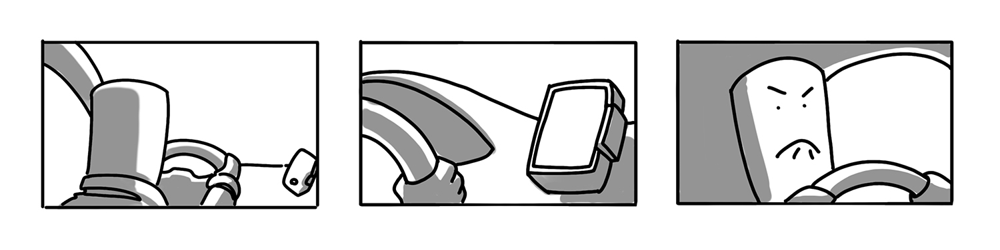
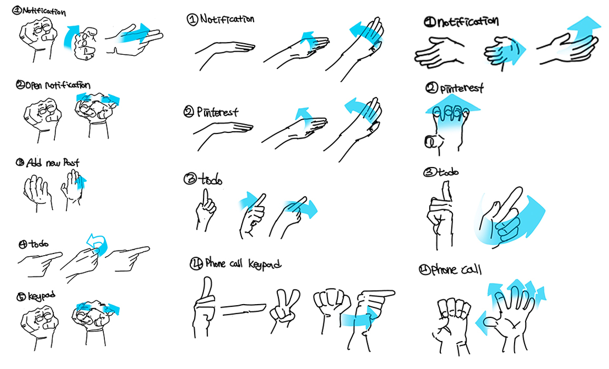

Gesture Control Music Player
This project focus on the process the way people consume media contents from touch screen to AR. AR is a whole new platform, so it needs a new way to control things. Gestures would be a great option for user and if users have to learn new gesture, which gestures would have smooth learning curve? What kind of gestures would be global gesture for whole users? How can we teach and make users get use to gestures?
Project Overview
Is touch control the best control in all situations? Will we be able to use the current touch method even if AR and VR era comes? Before moving on to AR and VR, we have to understand the limitations of current touch control and establish a foundation for overcoming these limitations with gesture control and responding to AR and VR media, not AR and VR media. Since gesture controls require our hands only, it will be a great control tool in the early periods of the AR and VR era.
Limits of the Touch control

The cell phone should always be in your hand to touch it. However, in our real lives, we often use smartphones on a cradle. When a smartphone on a cradle, smartphones are often far away from users, and there are many inconveniences in using them in these situations. Unlike when users are holding their smartphones, users have to stretch their arms and bent their back to touch smartphones. Which draws a lot of attention from users compared to the normal situation. A place with a lot of time to use a smartphone, such as a desk, would not be a big problem, but there is not enough time to change the music played on a smartphone while driving, and it's dangerous if the app draws users attention too much.
Gesture Control Research

Which gestures could replace touch control? Through interviews with real users, I sketched out the gestures they thought of. Most users preferred one-handed gestures. Due to the limited number of one hand gesture cases, gestures should be more distinctive from other hand gestures.
FInal Gestures
Scrolling
Scrolling is the most popular feature while using music apps. It is the most used function and requires highly accurate controls. Users have to use their gestures in the air, so it is hard to get information such as touch, vibrations, or buttons. Without this feedbacks, accurate control is difficult, so by using the user's hands, users can get enough feedback about how much they scrolled and where to stop their gestures.
Back
For the Back function, if it overlaps with other gestures, it will cause great inconvenience for the users when they are using it. This is why the Back function should have distinctive gestures and has a huge action compare to the other gestures.
Play/Select
For the Play and Select functions, I used finger snap gestures. Which could represent the intention of users and at the same time, clearly distinctive from other gestures.
Next/Previous
When using music apps, users do not always choose the music they want through scrolling. Sometimes users simply move on to the next repeatedly to find the music that they want. To make this function easy to use, when users tried to use this gesture, the app automatically highlights the name of the song. Which could help users to understand what they can do with that gesture.
Volume
The users are not familiar with gesture controls yet. However, there are a lot of gestures that we are using in our real-life such as turning volume controllers. We could get this gesture and use it for gesture control. This will help users lessen the burden of memorizing whole different gestures by using straight forward gestures.